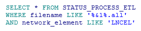
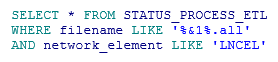

TABLERO NQI¶
1. OBJETIVO¶
El presente documento buscar explicar y detallar el proceso que genera el Tablero NQI DAY
2. ALCANCE¶
Áreas involucradas: Performance de Red
3. DEFINICIONES¶
- FD: Fecha desde, en formato DD.MM.YYYY
- FH: Fecha hasta, en formato DD.MM.YYYY
- Smart: Base de datos Oracle donde se encuentran las tablas de datos para la red de acceso, incluido GSM y GPRS
- Perdido: Servidor UNIX en donde se importan los XML desde el proveedor, y en donde se encuentra Smart. El nombre es perdido.claro.amx y la dirección ip física es 10.92.50.83
4. DESCRIPCION GENERAL¶
TABLERO_NQI
Descripción:¶
El tablero_nqi_day contiene información diaria sobre el tráfico de voz y datos, de las tecnologías umts y lte, agrupado por mercado y país. Para ver el tablero, una vez conectados a la base de datos Smart, con el PL/SQL ejecutar select * from tablero_nqi_day.
Contiene los siguientes campos:

Descripción de los campos:¶
- NQI CS : network quality index- Indicador a Nivel de Red
- QDA CS : Factor de Accesibilidad
- QDR CS :Factor de Retenibilidad
Server:¶
perdido.claro.amx (10.92.50.83).
Base de Datos:¶
Oracle 10G. Instancia WILLY
Frecuencia del proceso:¶
- DIARIA
Proceso que genera el tablero:¶
El proceso tiene nombre ” nqi_day_ins.sh ” y actualiza la tabla diariamente y se lo puede encontrar en el crontab del equipo perdido, a continuación se lo transcribe: 15 09 * /calidad/tablero/nqi/daily/nqi_day_ins.sh > /dev/null 2>&1 La ejecución entonces se realiza el minuto 15, de la hora 09, todos los días del año, todos los meses del año, todos los días de la semana (15 09 * *)
Duración del proceso:¶
- 2 minutos
Ubicación del proceso:¶
- /calidad/tablero/nqi/daily/nqi_day_ins.sh.
Para poder ver el proceso se sugiere conectarse vía ftp al server perdido, con el usuario “calidad”,
Logueo del proceso:¶
El logueo del proceso se realiza en el archivo nqi_day_ins.log (ubicado en el path /calidad/tablero/nqi/daily/)

5. MACRO FLUJO DEL PROCESO¶

6. DESCRIPCIÓN DETALLADA¶
El Shell Script nqi_day_ins.sh :
La función denominada f_tablero_nqi_day :
f_Tablero_Nqi_Day ()
{
# Autor: Monica Pellegrini. Fecha: 27.07.2016.
FECHA_DESDE=”$1”
FECHA_HASTA=”$2”
LOG=$3
f_log ‘Start NQI Day Ins’ $LOG
sqlplus -S / @${WorkDirNqiDaily}nqi_day_ins.sql $FECHA_DESDE $FECHA_HASTA
f_log ‘Finish NQI Day Ins’ $LOG
f_log ‘Start Tablero NQI Day’ $LOG
sqlplus -S / @${WorkDirNqiDaily}tablero_nqi_day.sql $FECHA_DESDE $FECHA_HASTA
f_log ‘Finish Tablero NQI Day ‘ $LOG
}
El logueo del proceso se realiza en el archivo nqi_day_ins.log (ubicado en el path calidad/tablero/minutos/):
El proceso .sql denominado nqi_day_ins.sql :
Los procedimientos P_UMTS_NSN_NQI_VOL_DAY_INS y P_LTE_NQI_DAY_INS :
Los reportes en la herramienta Smart se muestran de la siguiente manera:
 
